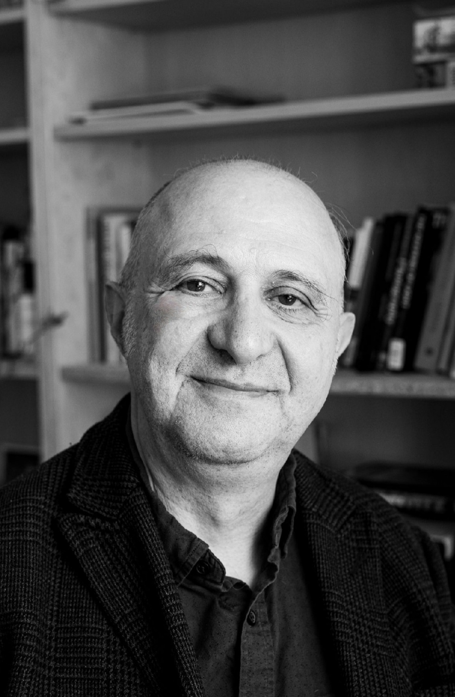

Free introductory workshop for single men, led by a licensed psychotherapist
Reserve Your SpotYou're successful in many areas of your life, yet you still haven't found the right person to share it with.
Perhaps the people you're drawn to seem unavailable, uninterested, or incapable of building the kind of relationship you want. Meanwhile, the people who show interest in you leave you feeling uninspired or disconnected. Or maybe you find yourself repeating familiar patterns from past relationships—without realizing how quickly those patterns can limit the possibility of genuine connection.
Relationships do not emerge by accident. Whether you've known someone for ten years or ten seconds, two people are always creating something together. It may be a family. It may be a home. It may simply be a meaningful conversation or a memorable evening. Whatever the outcome, the quality of what is created depends on the awareness, intentions, and patterns that each person brings into the relationship.
We'll explore some of the hidden factors that shape attraction, partner selection, emotional connection, and relationship success. Drawing on attachment theory, relationship science, and clinical experience, you'll gain a deeper understanding of your own relationship patterns and begin to identify what may be helping—or hindering—your search for lasting partnership.

Jeffrey Zeth, LCSW has spent many years studying and practicing approaches to personal growth and human development. His experience spans both corporate and wellness environments. Since 2010, he has been deeply interested in attachment, authentic connection, and the ways people can build healthier, more fulfilling relationships.
This workshop brings together those interests in a practical exploration of relationship readiness and lasting partnership.
It requires understanding yourself, recognizing the patterns that influence your choices, and developing the capacity to build a healthy and secure connection with another person. If you're ready to approach relationships with greater intention, clarity, and self-awareness, this workshop will offer a valuable first step.
Reserve Your Spot